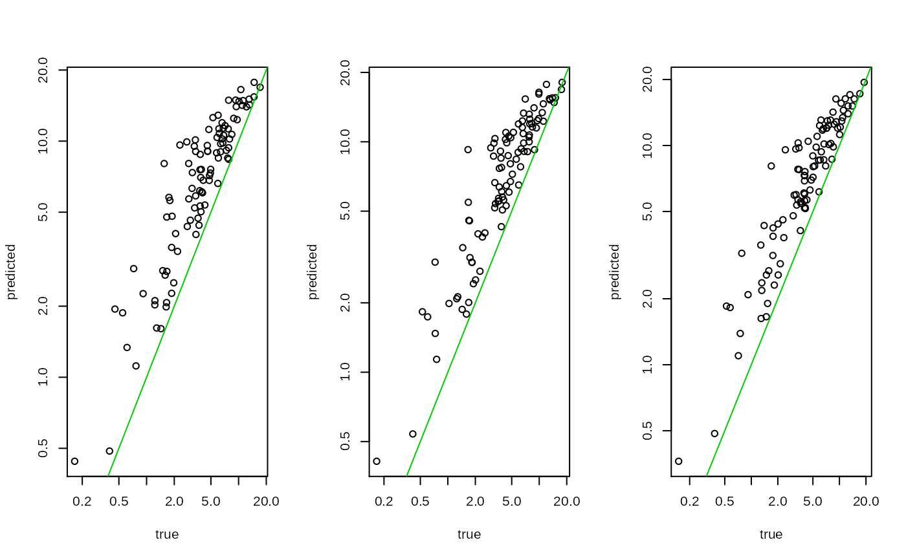

rcpp_mmutil_aggregate_velocity.RdCompute RNA velocity comparing the spliced and unspliced at the pseudo-bulk level (individual and cell type)
rcpp_mmutil_aggregate_velocity( spliced_mtx_file, unspliced_mtx_file, row_file, col_file, r_cols = NULL, r_indv = NULL, r_annot = NULL, r_lab_name = NULL, a0 = 1, b0 = 1, MAX_ITER = 100L, TOL = 1e-04, NUM_THREADS = 1L )
| spliced_mtx_file | spliced data file |
|---|---|
| unspliced_mtx_file | unspliced data file |
| row_file | row file (shared) |
| col_file | column file (shared) |
| r_cols | cell (col) names |
| r_indv | membership for the cells ( |
| r_annot | label annotation for the ( |
| r_lab_name | label names (default: everything in |
| a0 | hyperparameter for gamma(a0, b0) (default: 1) |
| b0 | hyperparameter for gamma(a0, b0) (default: 1) |
| MAX_ITER | maximum iteration for the delta estimation |
| TOL | tolerance level for convergence test |
| NUM_THREADS | number of threads (useful for many individuals) |
| spliced_col_file | column file for the spliced mtx |
| unspliced_col_file | column file for the unspliced |
a list of inference results
options(stringsAsFactors = FALSE) set.seed(1) nn <- 3000 rr <- rgamma(nn, 6.25, 6.25) # 1000 cells uu <- matrix(rgamma(100 * 3, 1, 1), 100, 3) dd <- matrix(rgamma(100 * 3, 1, 1/10), 100, 3) ss <- uu / (dd + 1e-2) ind <- sample(3, nn, replace=TRUE) spliced <- mmutilR::rcpp_mmutil_simulate_poisson(ss, rr, "sim_test_raw_spliced", r_indv = ind) unspliced <- mmutilR::rcpp_mmutil_simulate_poisson(uu, rr, "sim_test_raw_unspliced", r_indv = ind) .col <- sort(intersect(read.table(spliced$col)$V1, read.table(unspliced$col)$V1)) spliced <- mmutilR::rcpp_mmutil_copy_selected_columns( spliced$mtx, spliced$row, spliced$col, .col, "sim_test_spliced") unspliced <- mmutilR::rcpp_mmutil_copy_selected_columns( unspliced$mtx, unspliced$row, unspliced$col, .col, "sim_test_unspliced") .out <- mmutilR::rcpp_mmutil_aggregate_velocity( spliced$mtx, unspliced$mtx, spliced$row, spliced$col, r_col = .col, r_indv = ind[.col], a0 = 1, b0 = 1) .agg.u <- mmutilR::rcpp_mmutil_aggregate( unspliced$mtx, unspliced$row, unspliced$col, r_col = .col, r_indv = ind[.col], a0 = 1, b0 = 1) .agg.s <- mmutilR::rcpp_mmutil_aggregate( spliced$mtx, spliced$row, spliced$col, r_col = .col, r_indv = ind[.col], a0 = 1, b0 = 1) par(mfrow=c(1, ncol(.out$delta))) for(k in 1:ncol(.out$delta)){ plot(.agg.u$mu[,k]/.agg.s$mu[,k], .out$delta[,k], log = "xy", pch = 1, ylab = "predicted", xlab = "true") abline(a=0, b=1, col=3) }